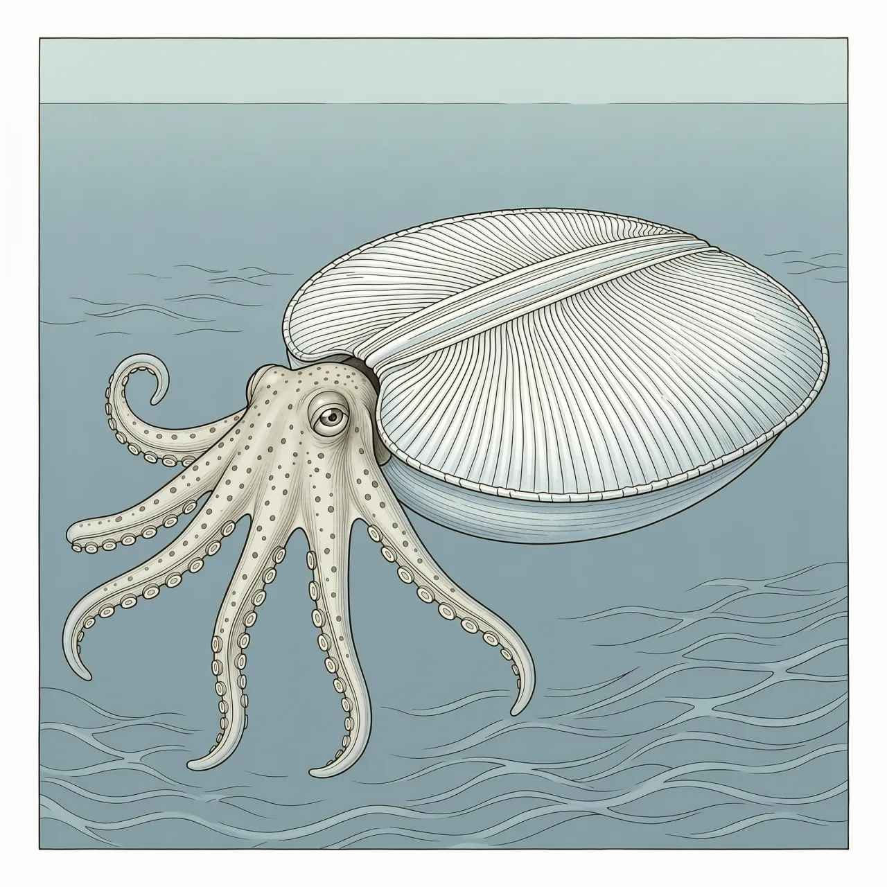
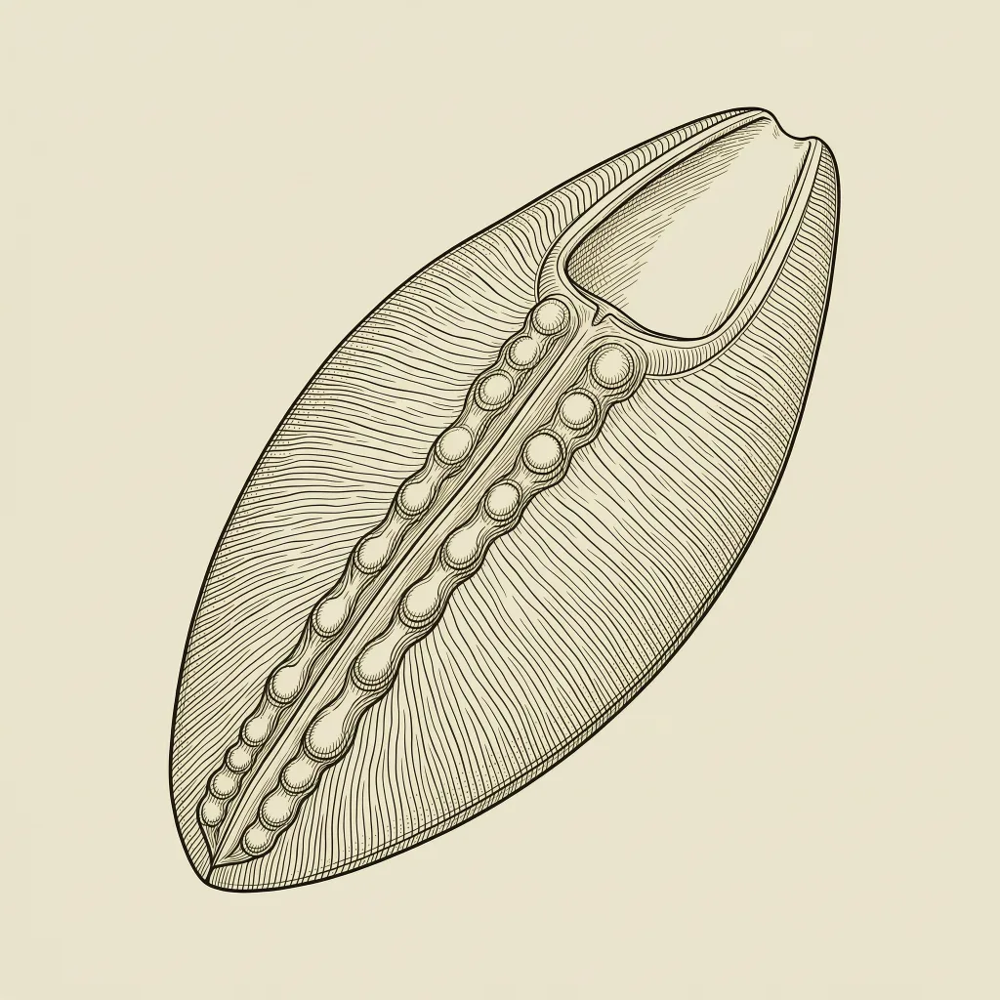

船蛸是热带和亚热带海域的远洋章鱼。雌性背上的薄壳并非真正的贝壳，而是由背腕末端分泌的石灰质卵盒，携卵并容纳浮力气体，与身体不相连。雄体很少超过2厘米，交配时把特化的腕断在雌性身上。
海面漂着一只白色的小盒子，盒口探出一只章鱼状的头部和腕足，那就是雌性船蛸。与贴着海床爬行的章鱼不同，船蛸一辈子生活在热带和亚热带海域的开放水域，贴着海面。船蛸属是船蛸科唯一的现生属，俗称「纸鹦鹉螺」，眼睛大，也缺少近亲快蛸属与水孔蛸属共有的水孔。大多数其他章鱼把卵藏在洞穴里，船蛸则把卵托付给自己分泌的一只漂浮盒子。
雌性船蛸背上的「壳」和身体完全独立。产卵之前，它的两条背侧腕的末端分泌出这枚两侧扁平的石灰质卵盒；卵产下后，雌性浮在卵盒里护着它们，遇到不安就退到深处。卵盒容纳泡状气体用于浮力，却没有有壳头足类那种带闭锥的间隔腔室，所以它算不上真正的贝壳。材料也特别：多数贝壳由霰石构成，船蛸的卵盒是方解石，呈3层结构，碳酸镁比例高达7%。
船蛸的两性异形极端：雌性成长到10公分，携带的卵盒可达30公分；雄性很少超过2公分，短暂一生只能交配一次。雄性缺少雌性用来分泌卵盒的那两条背侧腕，却有一条特化的交接腕用来转移精子。受精时这条腕插入雌性的外套腔，随后从雄性身上脱离、留在雌性那里——学者最初把它当成了一种寄生虫。雌性自古为人所知，而雄性船蛸的描述直到19世纪后期才出现。
